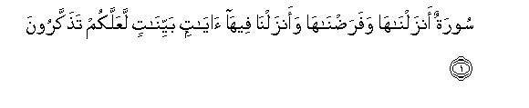
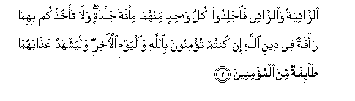
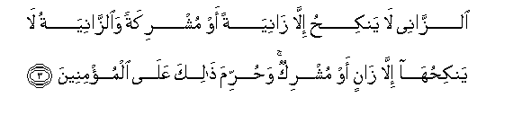
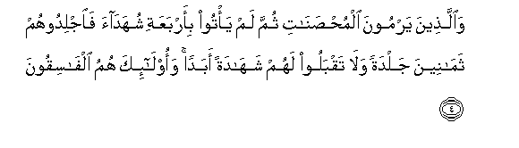
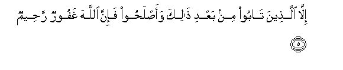
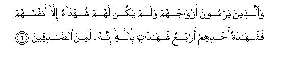
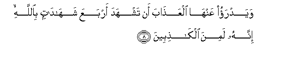

Sacred Texts Islam Index
Hypertext Qur'an Unicode Palmer Pickthall Yusuf Ali English Rodwell
Sūra XXIV.: Nūr, or Light. Index
Previous Next

The Holy Quran, tr. by Yusuf Ali, [1934], at sacred-texts.com
Sūra XXIV.: Nūr, or Light.
Section 1

1. Sooratun anzalnaha wafaradnaha waanzalna feeha ayatin bayyinatin laAAallakum tathakkaroona
1. A Sūra which We
Have sent down and
Which We have ordained:
In it have We sent down
Clear Signs, in order that
Ye may receive admonition.

2. Alzzaniyatu waalzzanee faijlidoo kulla wahidin minhuma mi-ata jaldatin wala ta/khuthkum bihima ra/fatun fee deeni Allahi in kuntum tu/minoona biAllahi waalyawmi al-akhiri walyashhad AAathabahuma ta-ifatun mina almu/mineena
2. The woman and the man
Guilty of adultery or fornication,—
Flog each of them
With a hundred stripes:
Let not compassion move you
In their case, in a matter
Prescribed by God, if ye believe
In God and the Last Day:
And let a party
Of the Believers
Witness their punishment.

3. Alzzanee la yankihu illa zaniyatan aw mushrikatan waalzzaniyatu la yankihuha illa zanin aw mushrikun wahurrima thalika AAala almu/mineena
3. Let no man guilty of
Adultery or fornication marry
Any but a woman
Similarly guilty, or an Unbeliever:
Nor let any but such a man
Or an Unbeliever
Marry such a woman:
To the Believers such a thing
Is forbidden.

4. Waallatheena yarmoona almuhsanati thumma lam ya/too bi-arbaAAati shuhadaa faijlidoohum thamaneena jaldatan wala taqbaloo lahum shahadatan abadan waola-ika humu alfasiqoona
4. And those who launch
A charge against chaste women,
And produce not four witnesses
(To support their allegations),—
Flog them with eighty stripes;
And reject their evidence
Ever after: for such men
Are wicked transgressors;—

5. Illa allatheena taboo min baAAdi thalika waaslahoo fa-inna Allaha ghafoorun raheemun
5. Unless they repent thereafter
And mend (their conduct);
For God is Oft-Forgiving,
Most Merciful.

6. Waallatheena yarmoona azwajahum walam yakun lahum shuhadao illa anfusuhum fashahadatu ahadihim arbaAAu shahadatin biAllahi innahu lamina alssadiqeena
6. And for those who launch
A charge against their spouses,
And have (in support)
No evidence but their own,—
Their solitary evidence
(Can be received) if they
Bear witness four times
(With an oath) by God
That they are solemnly
Telling the truth;
7. Waalkhamisatu anna laAAnata Allahi AAalayhi in kana mina alkathibeena
7. And the fifth (oath)
(Should be) that they solemnly
Invoke the curse of God
On themselves if they
Tell a lie.

8. Wayadrao AAanha alAAathaba an tashhada arbaAAa shahadatin biAllahi innahu lamina alkathibeena
8. But it would avert
The punishment from the wife,
If she bears witness
Four times (with an oath)
By God, that (her husband)
Is telling a lie;
9. Waalkhamisata anna ghadaba Allahi AAalayha in kana mina alssadiqeena
9. And the fifth (oath)
Should be that she solemnly
Invokes the wrath of God
On herself if (her accuser)
Is telling the truth.
10. Walawla fadlu Allahi AAalaykum warahmatuhu waanna Allaha tawwabun hakeemun
10. If it were not
For God's grace and mercy
On you, and that God
Is Oft-Returning,
Full of wisdom,
(Ye would be ruined indeed).